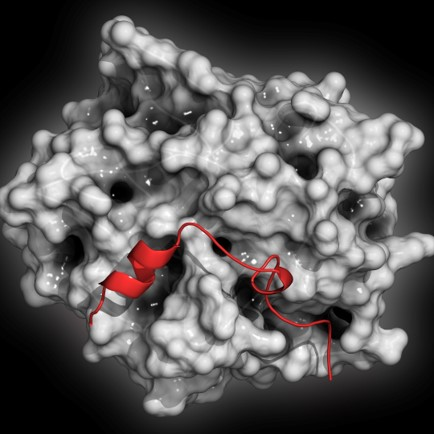

A reversão do efeito anticoagulante da dabigatrana pode ser alcançado com o uso de PCC (Complexo protrombínico de 4 fatores) ou do idarucizumab.
O idarucdaizumab é um fragmento de anticorpo monoclonal humanizado (Fab) que se liga à dabigatrana com alta afinidade, aproximadamente 300 vezes mais potente do que a afinidade de ligação da dabigatrana com a trombina.
O estudo RE-VERSE AD, multicêntrico, prospectivo, avaliou se o uso de 5g idarucizumab intravenoso seria capaz de reverter o efeito anticoagulante da dabigatrana.
